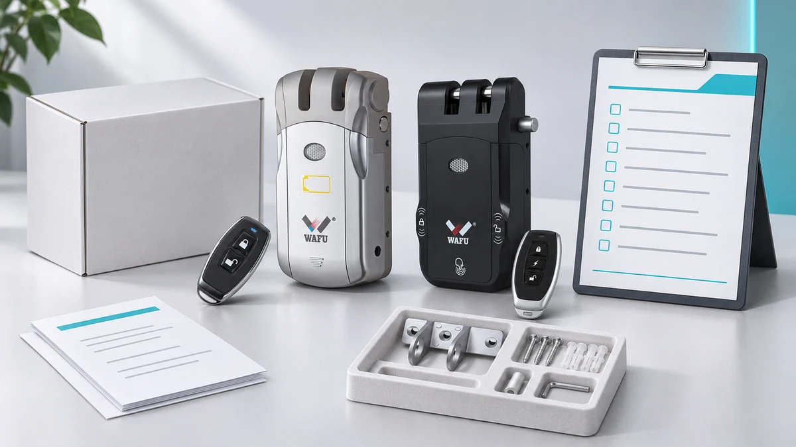
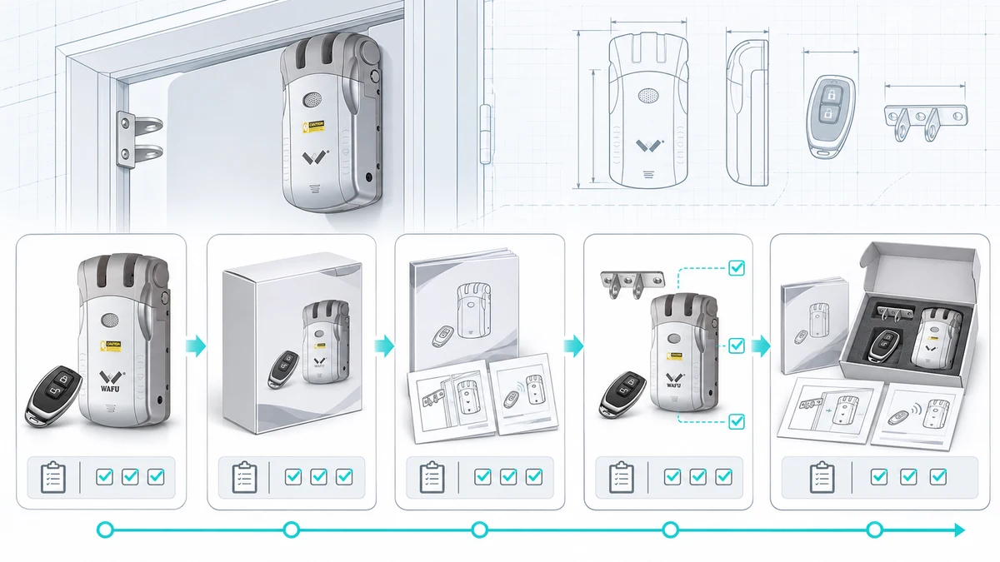

从项目边界、型号配置、包装资料和样品审批，到量产放行、版本变更及交付交接，梳理 OEM 项目上市前可逐项执行的核查流程，并明确采购方、品牌方、供应商和市场审核责任方应留下的记录。
项目边界
OEM 包装应与具体型号、目标市场和订单配置绑定。立项时确认品牌使用要求、预计数量、目标市场、包装语言和交付时间，并明确各方提供、制作及核对资料的责任。定制范围、可行性和费用以双方确认的项目文件为准。
建议先建立一页项目输入表，分别记录订单或项目编号、对应型号和选配、销售市场、预计数量、包装层级、所需语言、设计文件负责人、审批人和计划节点。区分“必须在量产前关闭”的事项与“可由项目负责人书面接受并跟踪”的事项；不能把责任方未知、配置未定或市场声明待核的情况默认为已批准。
采购方或品牌方负责确认其提供的商标、图像、品牌文案、联系方式和宣传主张是否获准使用；供应商负责按双方确认的配置提供样品及约定的产品资料；翻译、市场要求、包装结构和运输要求由项目文件指定相应审核方。某一方完成检查，不代表其他方的责任自动转移。合同、订单和双方确认的项目记录优先于通用清单。
包装资料清单
- 建立型号与配置清单，列明锁体、遥控器、锁扣、紧固件及其他实际约定的配件。
- 汇总包装设计稿、商标使用资料、标签内容、说明书语言和售后联系方式，并注明版本及负责人。
- 按目标市场列出需要核实的法规标识和文件，由相应责任方确认适用要求，不作未经证实的认证或合规宣称。
- 核对外箱信息、装箱数量、运输要求和交付地址，记录未决事项。
- 将产品实物、彩盒、内托、说明书、标签、封口或其他包装组件分别列出，注明每个组件是否适用于全部配置、由谁提供以及是否需要样品确认。
- 为设计稿、标签、说明书和翻译建立版本号或日期标识，记录文件所有者、审核人和批准记录。文件名相似不代表版本一致，应明确唯一的生产用文件包。
- 核对包装上的型号名称、配件图示、安装说明、联系信息和宣传文字是否与已确认的配置一致；无法证明的性能、认证、兼容性或市场声明先删除或提交责任方核验。
- 多语言内容按“原文确认—翻译—校对—版面复核”的顺序流转。重点复核型号、数字、单位、警示语、联系方式和页面断行，记录每种语言的审核人和最终稿版本。
- 核对外箱或物流标签所需的订单识别信息、装箱数量、收货方信息和运输标识；具体字段和标识由订单要求、承运安排及目标市场责任方确认，不从其他项目直接复制。
- 建立待确认清单，记录问题描述、受影响的文件或配置、责任人、截止日期、是否阻断量产及关闭证据。每次评审后更新状态并保留批准记录。
资料可以按“产品配置、品牌素材、文案与翻译、市场核查、包装结构、物流交付”六组归档。每组至少指定一位提交人和一位审核人；若同一人兼任，应在项目记录中写清楚。进入排版前先确认资料齐备，避免在临近印刷时才发现图片、译文或产品配件仍未定稿。

*图 1：OEM 包装及配件清单示意，实际装箱内容以确认的订单配置为准。*
产品与配置确认
制作包装前，参考 WF-010、WF-019 或 WF-026 的资料，与 WAFU 核对目标型号及实际选配。包装图片、型号、开锁方式和配件清单应与确认的样品一致；不同型号的功能不能相互套用。产品页面用于初步识别型号，未列明的配件、尺寸、功能和文件范围应以双方书面确认的信息为准。
建议为订单建立配置基线，至少记录型号、选配、外观或颜色（如项目指定）、配件、样品编号、对应说明书版本和包装文件版本。若项目含有由其他团队提供的软件、网关或系统资料，也要明确它们是否属于本次交付以及由谁验证；不要把未纳入订单的系统能力印入包装宣传。
样品核对可按“订单配置—产品样品—包装图稿—包装实物或数字样—装箱清单”逐项对照。对每项记录一致、不一致或待确认，并附文件名称、版本和证据。若产品配置变化，先判断会影响哪些图片、标签、说明书、包装内托或市场文字，再由相关责任人批准新的组合；旧版资料应标记作废或归档，不能与新版本并存于生产用文件夹。
包装、交付与上市
量产前审阅包装样品，检查印刷内容、配件清单、说明书版本和装箱方式，并记录批准人、日期及待整改事项。样品通过后，双方确认量产所依据的最终版本和变更通知方式。
评审时可依次检查：
- 产品识别：包装上的型号、产品图和描述是否对应批准样品；若多个型号共用版面，哪些内容需要区分应有清楚标识。
- 包装内容：内装产品、遥控器、锁扣、紧固件、说明书和其他配件是否与订单清单一致；缺少或多出的项目应记录并处理。
- 文件与语言：说明书、标签、品牌信息、联系方式和翻译是否为批准版本；印刷样或数字稿的版本应与审批记录相符。
- 包装呈现：对照实际样品或数字样，检查图文位置、可读性、折页方向、包装内物品摆放说明及项目约定的外观要求。此项只确认本项目批准稿，不替代供应商或第三方的运输、跌落或法规测试。
- 物流交接：核对装箱数量、箱件识别方式、收货资料和运输交接要求，并注明由谁提供最终数据、谁在发运前复核。
问题记录应包含编号、照片或页面位置、严重程度、责任人、计划完成日期和复验结论。涉及型号错误、缺件、未经批准的声明、错误联系方式或未关闭的阻断项时，应先暂停相应文件或订单的放行。轻微排版意见也应明确是否必须在本批次前修正，不能只留在聊天记录里。
采购方应核对其提供的品牌资料、目标市场要求和最终市场宣传；供应商按双方约定提供产品、样品和相关资料。项目指定的市场审核责任方对适用要求和所需文件进行核实。具体责任与交付文件以合同和项目确认记录为准；如运输、包装测试或认证由第三方承担，应在项目文件中单独注明其范围和证据来源。

*图 2：从产品、包装和说明文件到配件检查与装箱的示意流程。*
量产放行与变更控制
量产前建立一份放行记录，将已确认的型号、配置、配件、目标市场和订单对应起来。包装设计稿、标签和说明书应标明版本、负责人及批准日期；同时记录未决问题，并注明哪些问题会影响量产放行。放行记录应能让未参与讨论的生产或采购人员识别“本订单允许使用哪一组文件”，并能追溯到批准人和订单范围。
- 供应商核对型号、实际约定的配件和说明书是否对应订单配置。
- 采购方或品牌方批准品牌素材、译文、联系信息及面向市场的宣传表述。
- 项目约定的市场核查责任方确认适用的市场标识和文件，记录核查依据及尚未解决的问题。
- 双方对照已批准的设计稿和装箱清单，审阅实物或数字包装样品。
- 采购方记录审批人、批准的文件版本、对应订单和放行日期；供应商按同一版本集安排生产并留档。
放行前可逐项确认：订单配置已冻结；生产用文件有唯一版本；产品样品与包装内容一致；品牌及翻译已批准；市场核查责任方已记录结论或未决项；样品问题已关闭或经有权负责人书面接受；装箱与交付资料已有负责人。任何会改变产品识别、配件、市场声明或用户使用说明的问题，都应列为阻断项，直至完成确认。
样品批准后如有变更，应在使用新版本前记录新旧版本、变更原因、受影响的型号或订单、需要重新核查的内容、审批人和生效日期。若配置、配件、标签、市场宣传或包装内容发生变化，应重新检查相关文件，避免后续订单继续使用旧版说明书或设计稿。变更单还应说明旧版库存或已印刷材料如何处置、是否影响在制订单，以及谁负责通知采购、设计、供应商和仓库。
变更流程应先提出、再评估、后批准，最后发布新版本。未获批准前，生产和采购团队继续按当前有效版本执行，或按项目负责人书面指示暂停相关环节；不能因为新稿已经发送，就视为新版本已生效。批准后更新版本目录和发放记录，确保旧文件不会被误用，并在下一次样品或首批交付检查时复核变更是否正确落实。
常见问题
包装是否适用于所有型号？
不能默认通用，应按具体型号、配件、尺寸和交付配置确认包装及内托。若一套设计要覆盖多个型号，应列明共用部分和型号差异，并用每个配置的样品或经批准的资料逐项核对，避免只用其中一个型号的图片代表全部订单。
包装样品通过后还能修改吗？
如需修改，应由双方评估影响并确认新版本、审批责任和量产时间，避免旧版资料继续使用。还应确认修改是否影响已批准样品、已下订单、已印刷包装或目标市场审核；评估完成并有明确的生效范围后，才能将新版本用于对应批次。
上市前应由谁确认法规标识？
各方应在项目文件中明确责任；目标市场的适用要求和最终标识须由相应责任方核实。供应商可以提供其掌握的产品资料，但不能替代品牌方或项目指定审核方确认所有市场义务。若适用性尚未确认，应列为待核问题，不应先行印刷未经批准的标识或宣传内容。
下一步
提交 OEM 项目评估，提供目标型号及选配、目标市场、数量、包装层级、所需语言、现有设计资料、计划节点和待确认问题。若已有样品或包装稿，也请说明其版本、审批状态和计划覆盖的订单范围，以便先界定定制内容，再安排资料核对和样品评审。